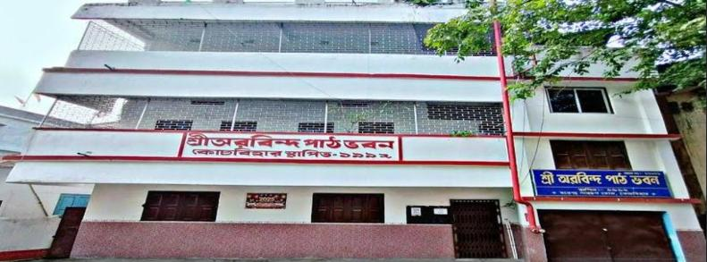

I completed my primary schooling at Sri Aurobindo Patha Bhavan, where I studied from LKG through Class 4. Those early school years gave me much more than an education—they gave me lasting friendships, happy memories, and experiences that I still cherish. The teachers, classmates, and everyday moments made that time special and helped shape some of my earliest memories of school.

I completed my entire schooling, from Class 5 to Class 12, at Coochbehar Rambhola High School between 2018 and 2026. Over these eight years, the school was where I built my academic foundation and grew from a curious kid into a focused student.
I scored 675 out of 700 in my Class 10 board examinations, and later chose the science stream with Physics, Chemistry, Mathematics and Biology for my 10+2, finishing with 468 out of 500. Studying all four subjects together taught me discipline, consistency and how to balance different ways of thinking, from the logic of mathematics to the detail of biology.
My years at Rambhola shaped both my academics and my character, and I'm grateful to my teachers and classmates who supported me along the way.

I'm currently pursuing my Bachelor of Technology(B.Tech) in Computer Science and Engineering(CSE) at IIT (ISM) Dhanbad, and I expect to graduate in 2030.
I'm building my foundation in computer science, improving my coding skills, and a lot more.
Also enjoying college life by taking part in campus events, workshops, and the many experiences IIT (ISM) has to offer. I'm also making memories with friends, meeting people with different perspectives, and learning beyond the classroom.